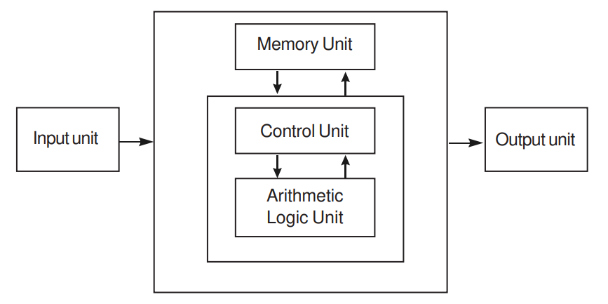

What is computer?
Computer is a device that transforms data into meaningful
information. Data can be anything like marks obtained by you in
various subjects. It can also be name, age, sex, weight, height,
etc. of all the students in a class.
Computer can also be defined in terms of functions it can
perform. A computer can i) accept data, ii) store data, iii) process
data as desired, and iv) retrieve the stored data as and when
required and v) print the result in desired format.
The major characteristics of a computer are high speed, accuracy,
diligence, versatility and storage.
Computer Organization

The computer performs basically five major operations of
functions irrespective of their size and make. These are
- it accepts data or instruction by way of input,
- it stores data,
- it can process data as required by the user,
- it gives results in the form of output, and
- it controls all operations inside a computer.
We discuss below each of these operations.
- INPUT :
This is the process of entering data and programs
into the computer system.
- Control Unit (CU):
The process of input, output, processing
and storage is performed under the supervision of a unit
called 'Control Unit'. It decides when to start receiving data,
when to stop it, where to store data, etc. It takes care of step
-by-step processing of all operations in side the computer.
- Memory Unit:
Computer is used to store data and
instructions.
- Arithmetic Logic Unit (ALU):
The major operations
performed by the ALU are addition, subtraction,
multiplication, division, logic and comparison.
- Output:
This is the process of producing results from the
data for getting useful information.
The ALU and the CU of a computer system are jointly known as
the central processing unit (CPU). You may call CPU as the brain
of any computer system.